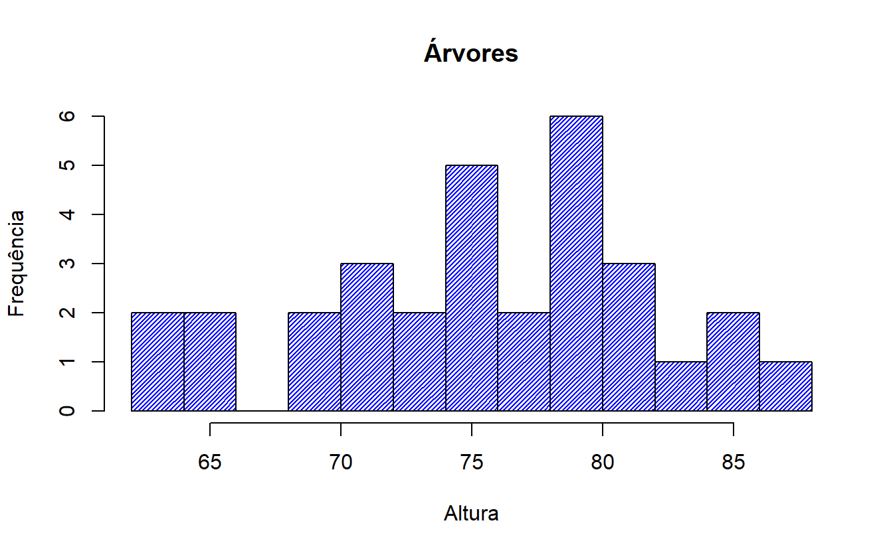
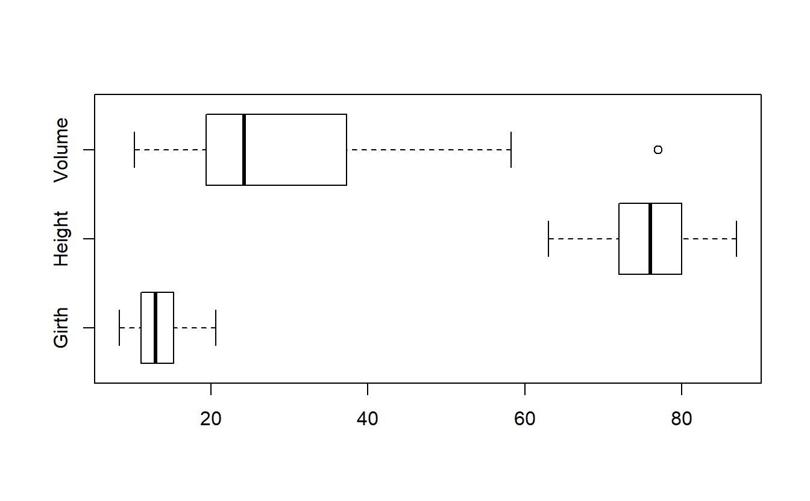
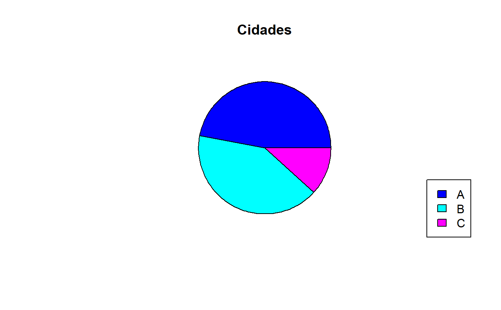

R Basics
This is just a sneak peek on forthcoming weeks. Here I’ll post the PT-BR version of the first pages of a R crash course that, hopefully, will help you out to start your career as a data scientist. Enjoy:
Native graph functions: Gráficos de funções nativas
Este capítulo apresentará algumas ferramentas nativas em R responsáveis pela exibição gráfica de alguns conjuntos de dados. Estatística descritiva e a escolha da maneira correta de apresentar os dados são de grande importância para um cientista de dados. Em outros capítulos, serão apresentadas outras maneiras de se criar exibições gráficas mais detalhadas e com outras opções, com pacotes que não são nativos do R.
Histogramas
O dataset trees traz informações sobre algumas árvores. Observando um resumo básico deste dataset, temos:
## Girth Height Volume
## Min. : 8.30 Min. :63 Min. :10.20
## 1st Qu.:11.05 1st Qu.:72 1st Qu.:19.40
## Median :12.90 Median :76 Median :24.20
## Mean :13.25 Mean :76 Mean :30.17
## 3rd Qu.:15.25 3rd Qu.:80 3rd Qu.:37.30
## Max. :20.60 Max. :87 Max. :77.00A coluna Girth informa o calibre de um tronco, enquanto que Heightapresenta a altura da árvore. Por fim, Volume informa, provavelmente em metros cúbicos, a capacidade tridimensional de ocupação da madeira daquela árvore. Apresentaremos agora a representação do dataframe trees em forma de histograma:
#histograma da altura das ?rvores com 10 caixinhas de intervalo
histograma <- hist(trees$Height,breaks=10)
Esta visualização é muito simplificada e pode ser melhorada. Por exemplo, os componentes do histograma poderiam ser azuis e vazados, e os eixos poderiam trazer alguma informação significativa acerca das dimensões examinadas. Também é possível, como visto abaixo, criar um título para o gráfico:
#complementando a estética do histograma anterior
plot(histograma,col="blue",density=40,
main="Árvores", ylab="Frequência",xlab="Altura")
Densidade
Ainda tomando como base o exemplo anterior, é possível que se deseje conhecer a curva que descreve a distribuição de densidade das alturas das árvores no dataset. Isso é possível através da função density().
#densidade das alturas, representadas por uma linha azul
densidade <- density(trees$Height)
plot(densidade,col="blue")
Sobreposição
Em uma situação em que seja necessário se comparar mais de uma representação, o recurso de sobreposição é indispensável. Tomemos como exemplo o caso anterior, que foi representado tanto em um gráfico de histograma quanto por um gráfico de densidade. Em R, é possível sobrepor as duas exibições utilizando a função par().
#sobreposição das informações (histograma como primeira camada)
plot(histograma,col="red",density=40,
main="Árvores", ylab="Frequência",xlab="Altura")
par(new=TRUE)
#apagando as legendas e o título do gráfico de densidade
plot(densidade,col="blue",xaxt='n',yaxt='n',ann=FALSE)Gráfico de dispersão
O gráfico de pontos, ou dispersão, pode ser usado para melhor representar as observações em duas dimensões. Esse recurso permite enxergar possíveis tendências, correlações e a sua magnitude. No R, a função plot() pode exercer nativamente esse papel, juntamente com alguns argumentos extras:
#gráfico de dispersão do calibre das árvores versus volume
plot(trees$Girth,trees$Volume,
main="Árvores",ylab="circunferência",xlab="volume",col="blue",
pch=20)
Para uma visão geral do dataset trees, o gráfico de dispersão também é muito útil, pois é possível enxergar a correlação de todas as variáveis com elas mesmas, em um grid amplo, utilizando a função plot() sem nenhum argumento, além do dataset em questão:
#plotando todas as correlações de todas as variáveis de uma só vez
plot(trees)
Também é possível dividir a tela em quantos espaços forem necessários, para uma exibição de diferentes tipos de gráficos:
#dividindo a tela para os gráficos que lhe interessam (nesse caso, dois)
split.screen(figs=c(1,2))## [1] 1 2#escolhendo o gráfico para a seção 1 da tela (nesse caso, o histograma)
screen(1)
plot(histograma)
#escolhendo o gráfico para a seção 2 da tela (nesse caso, gráfico de densidade)
screen(2)
plot(densidade)
Boxplot
Uma outra representação de dados agregados muito utilizada é o boxplot. Com ele, é possível visualizar não apenas a distribuição dos dados, mas também a tendência de centralidade e a existência ou não de outliers no dataset.
#boxplot com visualizaÇão geral mais amigável de todo o conteúdo
boxplot(trees,horizontal=TRUE)
Gráfico de barras
Para a exibição em barras, é necessário que se agregue os dados de uma forma específica. Tomemos como exemplo o dataset pop, que pode ser visualizado de maneira geral abaixo:
#criação de um dataframe chamado pop
pop <- as.data.frame(matrix(c(13,45,9,17,17,21,"A","B","A","C","A","B"),
ncol=2,nrow=6))
colnames(pop) <- c("quantidade","cidade")
pop## quantidade cidade
## 1 13 A
## 2 45 B
## 3 9 A
## 4 17 C
## 5 17 A
## 6 21 B#gráfico de barras de habitantes por cidade (com agregação dos dados)
hab <- aggregate(. ~cidade,data=pop,sum)
#criação do gráfico de barras e encapsulamento por box()
barplot(hab$quantidade,col=gray.colors(3),xlab="cidade",ylab="total",
names.arg=hab$cidade)
box()
Gráfico de setores
Também conhecido informalmente como “gráfico de pizza”, pode ser facilmente plotado em R através da seguinte função, juntamente com uma legenda:
#gráfico de setores (usando os dados agregados)
pie(hab$quantidade,main="Cidades",col=c(4:6),labels=NA)
#legenda
legend("bottomright",legend=hab$cidade,cex=1,fill=c(4:6))
Teste
ggplot